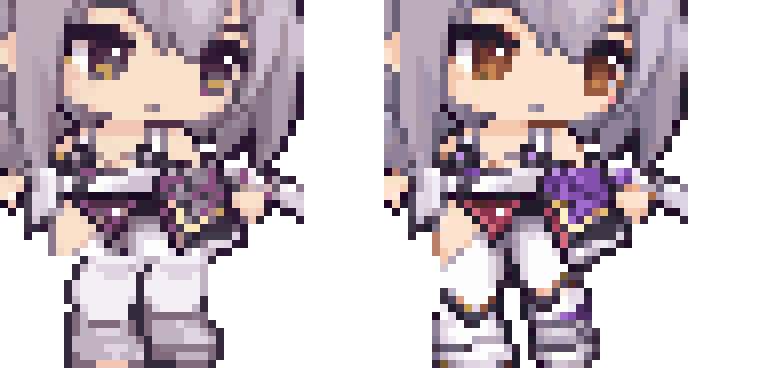

V2 외형으로 만든 앉기 4방향 보기 →
LITTLE GARDEN · CHARACTER RESTORATION
홍련2 · 색상과 연결 보완 V2
원본의 색과 이어진 전신을 복원갈색 눈과 보라색 장비를 살리고, 허리에서 다리로 이어지는 옷의 연결을 정리했어요.
원본 색상 기준
처음 AI 초안을 같은 128px 크기로 줄인 비교용 그림이에요.
이전 변환본 V1
색이 빠지고 다리를 교체한 경계가 보이던 버전이에요.
수정본 V2
눈·장비의 색을 확보하고, 허리부터 부츠까지 이어진 원본 그림을 사용했어요.
수정한 4방향
앞오른쪽 ↘
앞왼쪽 ↙
뒤오른쪽 ↗
뒤왼쪽 ↖
눈 · 허리와 다리 연결 확대

왼쪽: 이전 V1 / 오른쪽: 수정 V2. 실제 도트를 같은 배율로 확대했어요.
128×128 크기와 발 높이는 유지했어요. 이번에는 다리를 잘라 붙이지 않고 원본 전신을 이어서 정리했으며, 눈·피부·보라색 장비·금속에 쓸 색을 따로 확보했어요. 이전 정지와 앉기, 게임의 홍련은 그대로 보관해요.